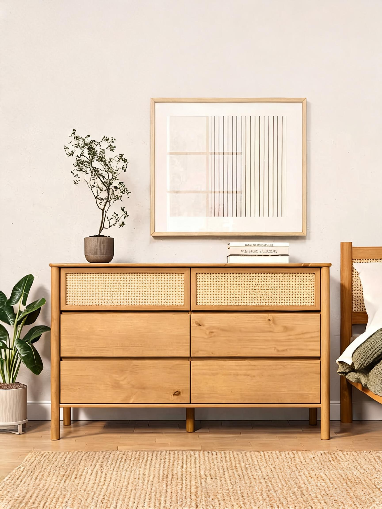

Quarto adulto
Como escolher uma cômoda para quarto adulto
Organização, proporção e presença visual para um quarto mais funcional.
A cômoda pode organizar a rotina e completar visualmente o quarto, desde que respeite medidas e circulação.
Defina o que será guardado
Roupas, acessórios e objetos de uso diário pedem divisões e alturas diferentes.
Observe proporção
A peça deve dialogar com cama, criado-mudo, espelho e área de passagem.
Escolha um design que permaneça
Linhas atemporais e madeira bem acabada ajudam o móvel a atravessar mudanças de decoração.